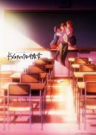
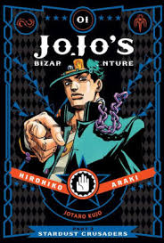

Welcome to Anime Addict's Books page where you can find different recommendations you should read, you can find more options from the other book pages
Recommened to read:
 Fancy something funny, serious and much more?
Fancy something funny, serious and much more?
Read Gintama.
During the Edo period, Japan is suddenly invaded by alien creatures known as the "Amanto." Despite the samurai's attempts to combat the extraterrestrial menace, the Shogun soon realizes that their efforts are futile and decides to surrender. This marks the beginning of an uneasy agreement between the Shogunate and Amanto, one that results in a countrywide sword ban and the disappearance of the samurai spirit.
However, there exists one eccentric individual who wields a wooden sword and refuses to let his samurai status die. Now that his kind are no longer needed, Gintoki Sakata performs various odd jobs around town in order to make ends meet. Joined by his self-proclaimed disciple Shinpachi Shimura, the fearsome alien Kagura, and a giant dog named Sadaharu, they run the business known as Yorozuya, often getting caught up in all sorts of crazy and hilarious shenanigans. (Source: myanimelist)
Domestic girlfriend:
Natsuo Fujii is in love with his teacher, Hina. Attempting to forget his feelings towards her, Natsuo goes to a mixer with his classmates where he meets an odd girl named Rui Tachibana. In a strange turn of events, Rui asks Natsuo to sneak out with her and do her a favor. To his surprise, their destination is Rui's house—and her request is for him to have sex with her. There's no love behind the act; she just wants to learn from the experience. Thinking that it might help him forget about Hina, Natsuo hesitantly agrees.
After this unusual encounter Natsuo now faces a new problem. With his father remarrying, he ends up with a new pair of stepsisters; unfortunately, he knows these two girls all too well. He soon finds out his new siblings are none other than Hina and Rui! Now living with both the teacher he loves and the girl with whom he had his "first time," Natsuo finds himself in an unexpected love triangle as he climbs ever closer towards adulthood. (Source: myanimelist)
JoJo's Bizarre Adventure Part 3: Stardust Crusaders:
In 1989, Joseph Joestar arrives in Japan to meet his troubled grandson Joutarou Kuujou at the request of his daughter Holly. Joutarou has locked himself in a jail cell out of fear that an evil spirit is possessing him and that he may cause harm to others. However, Joseph reveals the truth to Joutarou: this "spirit" is really a "Stand," a physical manifestation of one's fighting spirit. What's more, Joseph and his companion Mohammed Avdol possess Stands of their own and have learned to control them with ease.
Joseph's arrival comes with another piece of news: an old family enemy has returned from the grave, causing the Stands of the Joestar family to awaken. However, when a Stand manifests within Holly, her inability to cope with it leaves her gravely ill, stirring the men into action.
Armed with the power of Stands, a globe-trotting adventure from Japan to Egypt—where their adversary resides—begins. Meeting an array of nefarious Stand users along the way, as well as new allies, the team leads a crusade to save Holly and put an end to their enemy for good.(Source: myanimelist)
 Solo Leveling:
Solo Leveling:
Ten years ago, after "the Gate" that connected the real world with the monster world opened, some of the ordinary, everyday people received the power to hunt monsters within the Gate. They are known as "Hunters." However, not all Hunters are powerful. My name is Sung Jin-Woo, an E-rank Hunter.
I'm someone who has to risk his life in the lowliest of dungeons, the "World's Weakest." Having no skills whatsoever to display, I barely earned the required money by fighting in low-leveled dungeons... at least until I found a hidden dungeon with the hardest difficulty within the D-rank dungeons! In the end, as I was accepting death, I suddenly received a strange power,
a quest log that only I could see, a secret to leveling up that only I know about! If I trained in accordance with my quests and hunted monsters, my level would rise. Changing from the weakest Hunter to the strongest S-rank Hunter! (source: myanimelist)
© This is a demonstration website for LSBU (London Southbank University) all images and text is from, wikipedia, myanimelist, Crunchyroll, tenor, mangarock